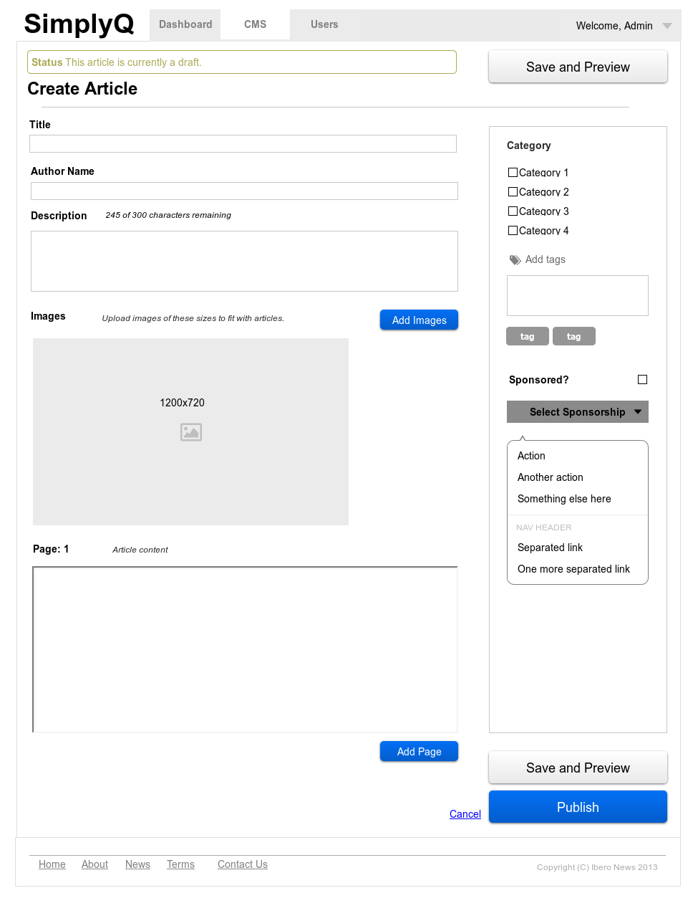
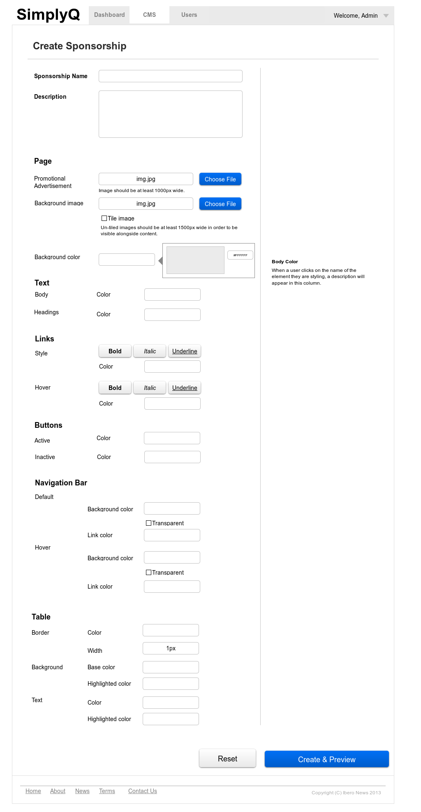

SimplyQ
rokk3rlabs
Role
During my internship at rokk3rlabs, I worked as the primary front-end developer on a project for a client called SimplyQ. There were two other designers on the team who had worked on the branding and design before I was onboarded onto the project.
SimplyQ was a multimedia lifestyle journal for young, professional females in the Miami area, with a specific focus on Latin culture.
Splash Page
The goal was to patch together a quick page which would act as a placeholder for the actual website. With this assignment, I was constrained by the copy and specifications of the client. Ideally, I wanted to make the page simple, actionable, and something that really allowed users to understand the product and what it could provide for them.
The mockups below show the three different states of the splash page, which worked like a carousel and would fade from one state to the other to display three specified messages and images. The large call-to-action here was to "Stay in the Know", or sign-up for the SimplyQ mailing list, prior to its launch. It ultimately led to an external mailing client which collected the user's email, which the client specified. However, I wish the action could be more immediate and salient by actually fixing the input field into the splash page itself. My hypothesis is that this would be able to produce a significantly greater number of mailing list sign-ups than just redirecting to an external site.

admin panel
The goal here was to design an experience for editors and bloggers to post and customize content. Something to keep in mind was that the users here were people who weren't necessarily technically-minded, but wanted to have the ability to customize their content.
The wireframe on the left depicts an editing interface for creating a new article on the SimplyQ platform. It's pretty standard, with the main calls-to-action to Save and Publish the article once the editor is done with the article, or finish this session of editing.
On the right is a low-fidelity mockup of the editing interface for a custom sponsorship. This page would be useful for cases where there might be a corporate sponsorship, in which the sponsor is able to customize the theme of a certain page or article based on their brand identity. I had to put myself in the mindset of how someone who might not be familiar with HTML and CSS attributes might think of editing a web theme. We made sure to use semantic names for each of the elements that were to be customized, as well as provided an in-context definition of what the element they were to be editing was - in the right rail of the page.


Overall, with this project, I wish I could have been more involved in defining the product itself, as opposed to filling in some of the gaps of the design itself. I really loved the idea of the product and the brand which the client chose to emanate, but I think there were lapses between the flow of the admin panel and the user-facing section of the site. This project did help me with learning how to work on a client-based project, and it taught me to advocate for my design decisions by articulating my decision-making process, as opposed to just presenting the client with finished products.